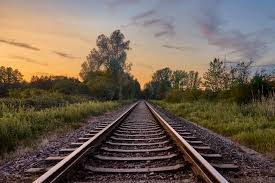
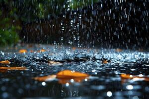
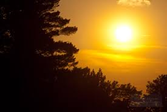

Someone told me long ago
There's a calm before the storm I know
It's been comin' for some time
When it's over, so they say
It'll rain a sunny day, I know
Shining down like water
I want to know, have you ever seen the rain?
I want to know, have you ever seen the rain?
Comin' down on a sunny day?
Yesterday, and days before
Sun is cold and rain is hot I know
Been that way for all my time
Till forever, on it goes
Through the circle, fast and slow I know
It can't stop, I wonder
I want to know, have you ever seen the rain?
I want to know, have you ever seen the rain?
Comin' down on a sunny day?
Yeah!, I want to know, have you ever seen the rain?
I want to know, have you ever seen the rain?
Comin' down on a sunny day?
  